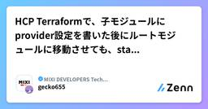

MIXI DEVELOPERS Tech Blogのフィード
https://zenn.dev/p/mixi
株式会社MIXIのZenn版テックブログです。実務で得た技術知見や個人的に調べたことなどを紹介しています。
フィード

GitHub Copilot Coding Agent でAWS構成図を書いてみた 1
1
MIXI DEVELOPERS Tech Blogのフィード
こんにちは。ご機嫌いかがでしょうか。"No human labor is no human error" が大好きな吉井 亮です。GitHub Copilot に新機能がリリースされました。https://github.blog/jp/2025-05-20-github-copilot-meet-the-new-coding-agent/主な機能はこんなところでしょうか。GitHub にネイティブ統合：Issue を割り当てるだけで起動。日常のワークフローを変えずに AI 自動化作業を導入。安全な GitHub Actions 環境： エージェントは自前ブランチしか p...
2日前

HCP Terraformで、子モジュールにprovider設定を書いた後にルートモジュールに移動させても、stateが変化しないことがある 1
MIXI DEVELOPERS Tech Blogのフィード
発生条件が特殊で、 Web をいくら検索しても同じ問題が発生している人を見かけなかったので[1]、記事にしてみます。 3行でHCP Terraform で、誤って子モジュールに provider alias の宣言をしていたのをルートモジュールに移動させたところ、 terraform state に反映されなかったHCP Terraform の "Refresh state" を実行したところ、 terraform state が更新され、ルートモジュールの provider が使われるようになったlocal backend では再現しなかったので、 HCP Terrafo...
4日前

MagicPodではAI要約のためにもコメントを入れようと思った話
MIXI DEVELOPERS Tech Blogのフィード
AI要約機能MagicPodで生成AIによるテストケース要約機能（以下、AI要約）が使えるようになり、約1年が経ちました。https://prtimes.jp/main/html/rd/p/000000043.000027392.htmlこれまではテストの内容を確認するために、テストケース編集画面を開いてテストの内容を読み込むか、説明欄に手動で情報を記入する必要がありましたが、AI要約の登場によりこれらの手間が軽減されました。 うまく要約されないテストケースほとんどのテストケースはいい感じに要約されます。ただ、1つだけうまくいっていない…どころかハルシネーションが起きて...
10日前
モンストWebショップの裏側：“商品購入”が完了するまで
MIXI DEVELOPERS Tech Blogのフィード
MIXI M事業部エンジニアの田代です。モンストWebショップ（以下Webショップ）は、モンスターストライク（以下モンスト）のアプリ外課金を実現するためのサイトです。MIXI M事業部が主体となり、モンストチームと連携して開発・運用しています。https://webshop.monster-strike.com/この記事ではWebショップにおける、購入の管理について焦点を当てて説明していきます。 Webショップシステム構成はじめにWebショップのシステム構成について説明します。Webショップは複数のシステムを組み合わせて実現しています。それぞれのシステムについて説明します。...
11日前
Amazon Bedrockを活用したPCI DSS要件の省力化
MIXI DEVELOPERS Tech Blogのフィード
1. はじめに 1.1 PCI DSSについてMIXIでは、全社ID・決済基盤システムを内製で開発・運用しており、各種決済手段を社内で開発している各サービスから統合的なインタフェースで利用できるようになっています。利用しているサービスの一例がMIXI MとモンストWebショップです。この決済基盤システムは決済代行の役割を担っており、クレジットカードで決済する時は、カード会員データを保持しながら決済プロバイダと通信しています。そのため、MIXIは、カード会員データを安全に取り扱うためのセキュリティ基準であるPCI DSSを2019年より取得しています。 1.2 要件10.4...
12日前
Claude Codeのアップデート内容を調べてみた
MIXI DEVELOPERS Tech Blogのフィード
はじめにClaude Codeは日々アップデートが繰り返されており、前回私が以下の記事を書いた時のバージョンが 0.2.19 でしたが2025/04/02現在の最新のバージョンは$ claude --version0.2.59 (Claude Code)となっています。https://zenn.dev/mixi/articles/daee52c49e739bリリースの履歴はこちらからご確認いただけます。https://www.npmjs.com/package/@anthropic-ai/claude-code?activeTab=versionsClaude Cod...
2ヶ月前
特徴量を言語を越えて一貫して管理する, 『特徴量ドリブン』な MLOps の実現への試み
MIXI DEVELOPERS Tech Blogのフィード
MIXI minimo の システム開発グループ AI 推進チーム で機械学習関連の施策をしている Taniii です.モデルの学習から推論, 実サービスへの実装までの一連の流れで, 品質を保証し, 高速にモデル改善のサイクルを回すためには, 特徴量の一貫した管理と, その管理の自動化が重要だと考えています.これらを実現するために, MIXI の運営するサービス minimo では, 特徴量の管理を中心に据えた自動化を導入しました.本記事では, 特徴量ドリブンな MLOps を実現するための試みを紹介します.!特徴量ドリブンな MLOps とは...特徴量を第一級の資産として...
2ヶ月前
Camel-AIのOWLを試してみた
MIXI DEVELOPERS Tech Blogのフィード
はじめにOWL(Optimized Workforce Learning)とはCAMELフレームワークに基づいて開発された先進的なマルチエージェントコラボレーションシステムです。エージェントのコラボレーションによって複雑な問題を解決するように設計されています。ローカルスクリプトを修正することで、モデルやツールをカスタマイズすることができます。少し前に話題になったmanusAIのオープンソースで利用可能な代替ツールとしていま話題になっています。このウェブアプリは現在ベータ版の開発中です。デモンストレーションとテストのみを目的として提供されており、本番での使用はまだ推奨されてい...
2ヶ月前
minimoの検索システムに機械学習モデルを組み込む
MIXI DEVELOPERS Tech Blogのフィード
はじめにサロンスタッフ予約サービス「minimo」でバックエンドエンジニアをしている肉です。minimoはユーザーにぴったりな美容師やネイリスト、アイデザイナー（以下、掲載者様）などを検索・予約できるサービスです。サロンに予約するのではなく掲載者様個人に直接予約することができ、来店前にメッセージでやり取りできるのが特徴です。minimoを説明するページがありますので気になった方や使ってみたい方はぜひ御覧ください。前回は minimoの検索システム用に機械学習モデルを作る という記事にてモデルを作る背景やその作り方について記事にしました。今回は機械学習モデルを既存システム...
2ヶ月前
Claude Codeを使ってみた
MIXI DEVELOPERS Tech Blogのフィード
はじめにClaude Codeとは、ターミナル上で動作し、コードベースを理解し、自然言語による指示を通じてより速くコーディングを支援するエージェント型コーディングツールです。開発環境に直接統合することで、追加のサーバーや複雑なセットアップを必要とせずにワークフローを効率化します。https://docs.anthropic.com/ja/docs/agents-and-tools/claude-code/overviewClaude Codeの概要は以下のブログにClaude 3.7 Sonnetと共に簡単にまとめています。https://zenn.dev/shirochan...
3ヶ月前
OAuth 2.0 / OIDC におけるAuthorization ServerからClientへのリクエストとその検証方法について
MIXI DEVELOPERS Tech Blogのフィード
ritouです。OAuth 2.0, OpenID Connectの実装の話です。良かったら読んでみてください。 いきなりまとめわかってる人向けに3行で説明します。Authorization Server から Client へのリクエストを送りたい事案が発生OAuth 2.0/OIDC関連の仕様の中で同様のことをしていないか調べた結果、RFC8417 Security Event Tokenを使うユースケースが存在検証側の実装を考慮して、Client認証の private_key_jwt にAuthorization Serverの識別子と署名を適用して使うことにした...
3ヶ月前
iTerm2のAIプラグインを使ってみる
MIXI DEVELOPERS Tech Blogのフィード
はじめに昨年の５月にリリースされたiTerm2のver3.5にAIの機能が搭載されていました。今更ながら実際に試してみました。Add AI-powered natural language commandgeneration. Enter a prompt in the composer andselect Edit > Engage Artificial Intelligence.You will need to provide an OpenAI API key sinceGPT costs money to use.A new AI feature i...
3ヶ月前
ID連携の導入パターンとMIXI IDの事例
MIXI DEVELOPERS Tech Blogのフィード
ritouです。今回は MIXI ID におけるID連携の導入について紹介します。 ID連携とその用途GoogleやApple, MicrosoftといったプラットフォーマーであったりX, FacebookといったSNSのユーザー情報を用いて別のサービスにログインできる仕組みのことをソーシャルログインと呼ばれています。これはデジタルアイデンティティの世界においてID連携(Identity Federation)と呼ばれている仕組みの一部です。Identity Provider(以下IdP)であるサービスのユーザー情報がRelying Party(以下RP)であるサービスに提供...
3ヶ月前
iOS18未満のSwiftUI .alert のButton.disable()のバグ
MIXI DEVELOPERS Tech Blogのフィード
alert内にTextFieldを持たせる場合にTextFieldの文字列によってalertのボタンを.disabled(_:)するパターンがあると思うがiOS18未満では正しく動作しないようだったコード例import SwiftUIstruct ContentView: View { @State var alertPresented = false @State var alertEnabled = false @State var alertText = "" var body: some View { VStack { ...
4ヶ月前
2025年はRAGの次にAIエージェントが来る
MIXI DEVELOPERS Tech Blogのフィード
はじめに2024年のAI界隈では「RAG」が一巡し、その可能性と限界が明確になってきました。最も顕著な点は「RAGは魔法の杖ではない」という認識の広がりではないでしょうか？RAGは確かに、既存の文書やデータを活用したAIの応答精度向上に貢献してきました。しかし、単純な質問応答を超えた複雑なタスクの実行や、動的な状況への適応には限界があることも明らかになっています。この限界を超えるための次のステップとして注目を集めているのが「AIエージェント」です。OpenAIのCEOであるサム・アルトマンが「次のブレークスルーはエージェントだ」と発言していたりhttps://www.red...
5ヶ月前
minimoの検索システム用に機械学習モデルを作る
MIXI DEVELOPERS Tech Blogのフィード
!これは、MIXI DEVELOPERS Advent Calendar 2024 の25日目の記事です。 はじめにサロンスタッフ予約サービス「minimo」でバックエンドエンジニアをしている肉です。minimoはユーザーにぴったりな美容師やネイリスト、アイデザイナー（以下、掲載者様）などを検索・予約できるサービスです。サロンに予約するのではなく掲載者様個人に直接予約することができ、来店前にメッセージでやり取りできるのが特徴です。minimoを説明するページがありますので気になった方や使ってみたい方はぜひ御覧ください。 検索機能の問題点とその改善案さて、minimo...
5ヶ月前
AWS CodeBuildのGitHub Apps対応
MIXI DEVELOPERS Tech Blogのフィード
本記事は「MIXI DEVELOPERS Advent Calendar 2024」のシリーズ2 2日目の記事です。株式会社MIXIでサロンスタッフ予約サービス「minimo」のバックエンドエンジニアをしている鈴木です。minimoで使用しているAWS CodeBuildのGitHub Apps対応をどのように行ったかについて書いていきます。 経緯https://zenn.dev/mixi/articles/48f6c9b6f084cf#github-enterprise-cloud-導入詳細は上記の記事を見ていただきたいですが、MIXIではGitHub Enterprise...
5ヶ月前
MagicPodヘルススコアの全社統合分析用ダッシュボードを作成してみた
MIXI DEVELOPERS Tech Blogのフィード
!これは MIXI DEVELOPERS Advent Calendar 2024 の24日目の記事です。 背景株式会社MIXI（以下、MIXI）は2021年8月にMagicPodを導入し、2024年12月現在3年と4ヶ月が経過しました。今までMagicPodの運用は各事業部に任せっきりで、全社横断的に運用状況を把握することができませんでした。インプロセスQAとして実務を行なっていた私ですが、2024年10月より横断的にMagicPodに関する支援を行うことになったので、まずは全社把握を行うことにしました。 自動テスト評価に関して、MagicPodでできること・できない...
5ヶ月前
minimo における AWS アカウントログインを AWS IAM Identity Center に移行しました
MIXI DEVELOPERS Tech Blogのフィード
本記事は MIXI DEVELOPERS Advent Calendar 2024 のシリーズ2 24日目の記事です。サロンスタッフ予約サービス minimo のソフトウェアエンジニアをしている yhamano0312 です。minimo ではこれまで AWS アカウントへのログインに IAM User を利用していましたが、最近 AWS IAM Identity Center に移行しました。本記事では移行した背景と移行内容について紹介します。 IAM User の課題IAM User は AWS を触ったことがある人は全員利用した経験があるでしょう。マネジメントコンソールに...
5ヶ月前
AppStoreのプロモーションオファーを触ってみた
MIXI DEVELOPERS Tech Blogのフィード
!これは MIXI DEVELOPERS Advent Calendar 2024の23日目の記事です。 これは？App Store上のアプリのサブスクリプション商品について期間限定の割引などができるプロモーションオファーの実装をしてみたのでやったことを下記するプロモーションオファーはサブスクリプションオファーとも呼ばれていることもある フロー公式から抜粋 App Store Connect上の設定App Store Connect側でいくつかの設定が必要 プロモーションオファーを作成サブスクリプション商品 -> サブスクリプション価格 ->...
5ヶ月前